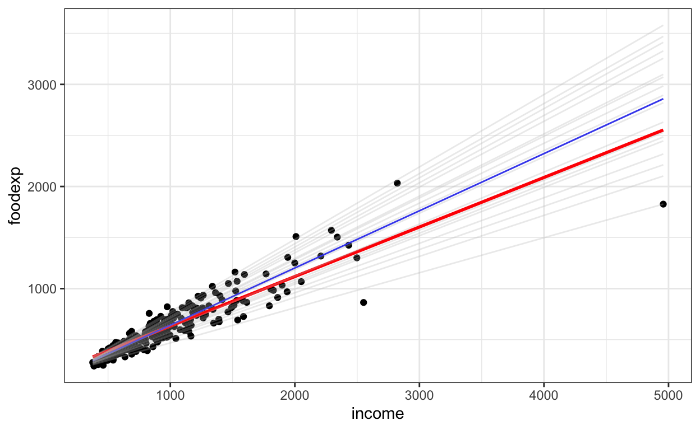
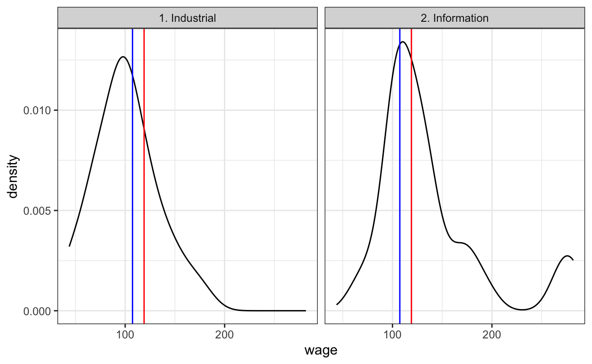
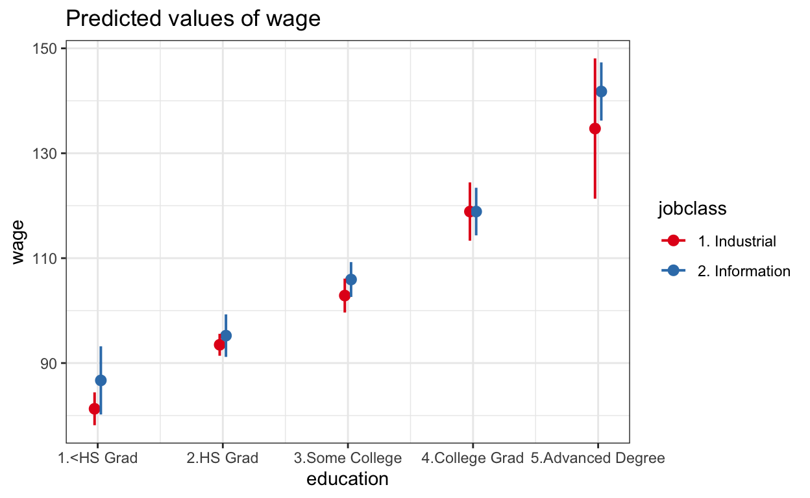
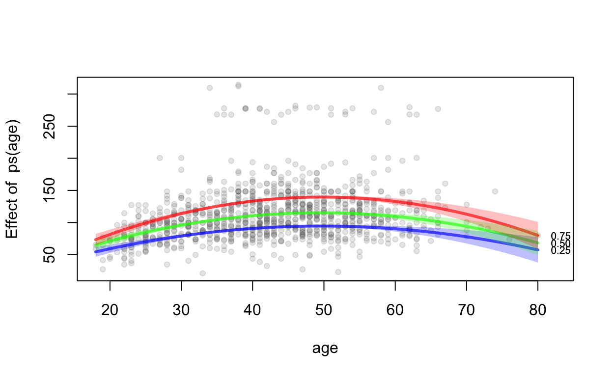

This post as a video
I recommend to watch a video first, because I highlight things I talk about. It’s only 14 minutes long.
Why do we need Quantile Regression (QR)?
Particularly, QR:
- is robust to outliers and influential points
- does not assume a constant variance (known as homoskedasticity) for the response variable or the residuals
- does not assume normality
- but the main advantage of QR over linear regression (LR) is that QR explores different values of the response variable, instead of only the average, and delivers therefore a more complete picture of the relationships between variables.
So, let’s:
- take problematic data,
- build both, linear and quantile models, and see
- whether QR can solve problems and be a truly Useful Alternative for Ordinary Linear Regression.
1. Solve outliers problem: Median Regression (only 5th quaNtile, or 2nd quaRtile)
We’ll first see how both models deal with outliers. For that we’ll create a small data set with ONE obvious outlier and use geom_smooth() function to create a linear model and geom_quantile() function for a quick quantile regression, with only 5th quantile, which makes it a median-based regression.
# create data
library(tidyverse)
d <- tibble(
predictor = c( 1, 2, 3, 4, 5, 6, 7),
outcome = c(1.5, 2.3, 2.8, 4.1, 5.3, 0, 6.8)
)
# plot ordinary and median regressions
ggplot(d, aes(predictor, outcome))+
geom_point()+
geom_smooth(method = lm, se = F,color = "red", )+
geom_quantile(quantiles = 0.5)
This plot shows, that linear model tries to please all points and misses most of them, which results in a bad fit. In contrast, the Median Regression ignores the outlier and visually fits the rest of the data much better. But how do we know that Median Regression is indeed better?
Well, if we create an ordinary and quantile regressions, we can compare the amount of information they loose. The Akaike’s Information Criterion (AIC) measures such loss of information. Namely, the lower the AIC, the better the model. Thus, a lower AIC of QR indicates a smaller loss of information from the data, as compared to LR, making QR a better model. Moreover, since the slope of LR is not significant, while the slope of QR is, using a wrong model could cost you an important discovery. So, no Nobel Price for you!
# model median (2nd quantile) regression
lr <- lm(outcome ~ predictor, data = d)
library(quantreg)
mr <- rq(outcome ~ predictor, data = d, tau = .5)
# compare models
AIC(lr, mr) # => the lower AIC the better df AIC
lr 3 34.90235
mr 2 27.09082library(sjPlot) # I made a video on this 📦
theme_set(theme_bw())
plot_models(lr, mr, show.values = TRUE,
m.labels = c("Linear model", "Median model"),
legend.title = "Model type")
By the way, we can use ols_plot_resid_lev() function from {olsrr} package and see that we indeed have an outlier.

2. Solve heteroscedasticity
Now let’s take a real world heteroscedastic data and see whether median regression handles it better. Engel dataset from {quantreg} package explores the relationship between household food expenditure and household income. Similarly to previous example, the median and mean fits are quite different, which can be explained by the strong effect of the two unusual points with high income and low food expenditure. Probably just greedy people.
# get heteroscedastic data
data(engel)
ggplot(engel, aes(income, foodexp))+
geom_point()+
geom_smooth(method = lm, se = F, color = "red")+
geom_quantile(color = "blue", quantiles = 0.5)+
geom_quantile(color = "gray", alpha = 0.3,
quantiles = seq(.05, .95, by = 0.05))
In order to better justify the use of QR, we can check heteroskedasticity via Breusch-Pagan test. Our test detects heteroscedasticity, so that we again need an alternative to linear regression. And, a lower AIC of median-based regression again shows a better fit, as compared to the mean-based regression.
# compare models
lr <- lm(foodexp ~ income, data = engel)
library(performance) # I made a video on this 📦
check_heteroscedasticity(lr)Warning: Heteroscedasticity (non-constant error variance) detected (p < .001). df AIC
lr 3 2897.351
qm50 2 2827.2603. Solve not-normal (skewed) distribution & not-homogen variances across groups + categorical predictor
Now let’s see how both models handle not-normally distributed or skewed data, and, at the same time, see how they handle categorical predictors.

For that we’ll use a Wage dataset from {ISLR} package and model the salary of 30 industrial and IT workers. And when we check the assumptions of linear model, we’ll see, that our data has no outliers, but is not-normality distributed and variances between groups differ, so our data is again - heteroscedastic. And that’s a big problem, because if SEVERAL assumption of a model fail, we CAN NOT trust the results of such model.
# get not-normal data
library(ISLR)
set.seed(1) # for reproducibility
salary <- Wage %>%
group_by(jobclass) %>%
sample_n(30)
lr <- lm(wage ~ jobclass, data = salary)
check_outliers(lr)OK: No outliers detected.
- Based on the following method and threshold: cook (0.5).
- For variable: (Whole model)check_normality(lr) Warning: Non-normality of residuals detected (p < .001).Warning: Variances differ between groups (Bartlett Test, p = 0.005).(By the way, if we don’t specify any quantiles in quanlile regression, the default 5th quantile or - median regression (tau = 0.5) will be modeled.)
And what are those results? Well, linear model reveals, that average annual salary of IT workers is almost 37.000$ higher as compared to industrial workers, and such big difference in means is significant. While median regression shows, that IT crowd earns only 19.6 thousand dollars more and this difference in medians is not significant.
The lower AIC of the median regression again shows that QR performs better then LR. So that, while in the case with outliers LR missed an important discovery, here LR discovered nonsense.
# tau = .5 - or median regression is a default
mr <- rq(wage ~ jobclass, data = salary, tau = 0.5)
plot_models(lr, mr, show.values = T,
m.labels = c("Linear model", "Median model"),
legend.title = "Model type")
AIC(lr, mr) df AIC
lr 3 630.4943
mr 2 614.7647Such nonsense is often caused by small samples, and indeed, if we take all 3000 workers from Wage dataset, we’ll see that both models show significantly higher salary of IT crowd as compared with factory workers. However, the median regression still shows a smaller difference and a smaller AIC tells us that QR is still a better model, which makes sense for not-normally distributed and heteroscedastic data. Now, let’s finally get to the main advantage of QR. (halliluja)
lr <- lm(wage ~ jobclass, data = Wage)
mr <- rq(wage ~ jobclass, data = Wage)
plot_models(lr, mr, show.values = T,
m.labels = c("Linear model", "Median model"),
legend.title = "Model type")
AIC(lr, mr) df AIC
lr 3 30774.50
mr 2 30248.764. Model more then just mean or just median - model several quantiles
# model several quantiles
library(ggridges)
ggplot(Wage, aes(x = wage, y = jobclass, fill = factor(stat(quantile)))) +
stat_density_ridges(
geom = "density_ridges_gradient", calc_ecdf = TRUE,
quantile_lines = TRUE, quantiles = c(.1, .5, .9)
) +
scale_fill_viridis_d(name = "Quantiles")+
xlab("salary")
While median regression delivers better results, the median is still a single central location, similar to the mean. But since median regression is a special case of QR, which uses only a 5th quantile, and since QR can easily model other quantiles too, a QR allows you to easily model low and high salaries! In other words, QR can be extended to noncentral locations. Namely, if we take a low quantile, for example 0.1 instead of 0.5, we’ll model the difference between low income factory and low income IT workers. Similarly, if we take a high quantile, for example 0.9 instead of 0.5, we’ll be able to check the difference between top salaries of industrial vs. top salaries of IT workers.
lr <- lm(wage ~ jobclass, data = Wage)
qm10 <- rq(wage ~ jobclass, data = Wage, tau = 0.10)
qm50 <- rq(wage ~ jobclass, data = Wage, tau = 0.50)
qm90 <- rq(wage ~ jobclass, data = Wage, tau = 0.90)
plot_models(lr, qm10, qm50, qm90,
show.values = TRUE,
m.labels = c("LR", "QR 10%", "QR 50%", "QR 90%"),
legend.title = "Model type")+
ylab("Increase in wage after switch to IT")
The results show, that for low salaries the difference between industrial and IT jobs is smaller, then for median or high salaries. The reason for that could be education, so that when your education level is low, switching jobs from factory to IT would only increase your salary by ca. 8.000 bucks, while when you have a college degree, changing to IT will increase your salary by over 25.000 bucks. However, the reason itself is not important. What is important here, is that, while ordinary linear regression describes only an average change in salaries when we switch from industrial to IT job, quantile regression uncovers what happen after you switch jobs having low, median or high salary. In other words, a new salary after switching jobs depends on the salary before switching, which makes sense. But what doesn’t make any sense is that, an ordinary linear regression over-promises increase in salary for low earners and under-promises increase in salary for high earners. Thus, QR reveals a more complete picture of reality, and allows you to make a more informed decision.
library(ggridges)
ggplot(Wage, aes(x = wage, y = jobclass, fill = factor(stat(quantile)))) +
stat_density_ridges(
geom = "density_ridges_gradient", calc_ecdf = TRUE,
quantile_lines = TRUE, quantiles = seq(.1, .9, by = 0.1)
) +
scale_fill_viridis_d(name = "Quantiles")
qm20 <- rq(wage ~ jobclass, data = Wage, tau = 0.20)
qm30 <- rq(wage ~ jobclass, data = Wage, tau = 0.30)
qm70 <- rq(wage ~ jobclass, data = Wage, tau = 0.70)
qm80 <- rq(wage ~ jobclass, data = Wage, tau = 0.80)
plot_models(lr, qm10, qm20, qm30, qm50, qm70, qm80, qm90, show.values = TRUE)+
theme(legend.position = "none")+
ylab("Increase in wage after switch to IT")
But that is just a beginning! Because, similarly to low (tau = 0.1) or high (tau = 0.9) quantiles, we can model more quantile to get more useful inference. And we can even …
5. Model the entire conditional distribution of salaries via all possible quantiles
… by defining the sequence of quantiles, from let’s say 0.1 to 0.9, and defining the step, in order to control how many quantiles we model. For example using “by = 0.1” will model 9 quantiles from 0.1 to 0.9.
Plotting the summary of our model (a quantile process plot) uncovers how switching to IT affects the entire conditional distribution of salaries. The red lines show the mean effect with confidence intervals estimated by linear regression. While shaded gray area shows confidence intervals for the quantile regression estimates. The non-overlapping confidence intervals between quantile and linear regression can be seen as significant difference between models. So that, linear regression significantly over-promises the increase in salaries when you switch to IT for low and medium earners (if we ignore the very small overlap from 0.3 to 0.6 quantiles), significantly underestimates the increase in salary for top 10% earners, while correctly describes the increase in salary for only a small part of workers with already relatively high salaries.
seq(0.1, 0.9, by = 0.1)[1] 0.1 0.2 0.3 0.4 0.5 0.6 0.7 0.8 0.9q <- rq(wage ~ jobclass, data = Wage,
tau = seq(0.1, 0.9, by = 0.1))
summary(q) %>%
plot(parm = "jobclass2. Information")
6. Multivariable regression
So, I think a univariable QR is already much more useful then LR. But that’s not all, multivariable QR is even more useful, because it can uncover which variables are important for low or for high values of the response variable.
Let’s have a look at two multivariable examples.
1) American salaries
In the first example we’ll continue to model salaries, but instead of only a “jobclass” predictor, we’ll add “age” and “race” predictors.
Let’s interpret the influence of “age” on salary first. The young low earners would significantly increase their salaries as they age, because y-axis, which shows the slope of this increase, is positive and does not include zero. However, this realistic increase over lifetime is significantly smaller then average, promised by the linear regression, because red and gray confidence intervals don’t overlap. The young high earners have much higher slope, meaning much stronger increase in salary over lifetime, which was significantly underestimated by the linear regression. Here again, high educational degree could cause young people to earn a lot of money already in the beginning of their lives, and opens better chances to increase the salary over lifetime.
The interpretation of the categorical predictor “race” is even more interesting. Since “White” people are the intercept, “Black”- and “Asian-Americans” can be compared to “White” Americans. Here, linear regression shows that on average for low income folks, Black people earn significantly less then White people, because the coefficient is negative and does not cross the zero, which is wrong. Because, in reality, since gray confidence intervals cross the zero, there is no significant difference between White and Black folks with low income. In contrast, when salaries are high, Black workers earn significantly less then White workers, even when they earn millions.
The wages of Asian Americans show the opposite. Namely, while linear regression mistakenly predicts that Asian folks get significantly more then White folks, independently of their salary, QR shows that low income Asian people earn significantly less or similar to White people.
# multivariable regression
q <- rq(wage ~ jobclass + age + race, data = Wage,
tau = seq(.05, .95, by = 0.05))
summary(q) %>%
plot(c("jobclass2. Information", "age", "race2. Black", "race3. Asian"))
Since, in all of the panels of the plot, the quantile regression estimates lie at some point outside the confidence intervals for the ordinary least squares regression, we can conclude that the effects of “jobclass”, “age” and “race” are not constant across salaries, but depends on a height of the salary.
And if that’s not enough, you can go one step further and conduct a …
Nonparametric non-linear quantile regression
… for numeric predictors using {quantregGrowth} package. But before you do that, have a look at the last example where we check the influence of 5 predictors on the efficiency of cars.
# non-linear quantile regression
library(quantregGrowth)
set.seed(1)
o <-gcrq(wage ~ ps(age),
data = Wage %>% sample_n(100), tau=seq(.10,.90,l=3))
# par(mfrow=c(1,2)) # for several plots
plot(o, legend=TRUE, conf.level = .95, shade=TRUE, lty = 1, lwd = 3, col = -1, res=TRUE) 
2) Efficiency of cars
Here, a linear regression will answer the question - which variables affect the average car mileage? A low quantile of 0.1 will tell us which predictors are important for not efficient cars, which drive only a few miles per gallon of gas. A high quantile of 0.9 will tell us which predictors are important for highly efficient cars, which drive a lot of miles per gallon of gas. We’ll also conduct a median regression in order to compare it to LR and for a more complete presentation of the results.
Let’s start with that. The negative coefficient of “horsepower” indicates significant decrease in efficiency of cars with increasing horsepower. Both, mean-based and median-based models agree on that. However, while linear regression reports “Engine displacement” to be not-important for efficiency, median regression shows that it is important. Moreover, quantile regression reports that increasing acceleration significantly reduces mileage of not-efficient cars and has no effect on highly efficient cars, while linear regression can’s say anything about low or highly efficient cars.
cars <- Auto %>%
select(mpg, cylinders, displacement, horsepower, acceleration, origin)
l <- lm(mpg ~ ., data = cars)
q10 <- rq(mpg ~ ., data = cars, tau = .1)
q50 <- rq(mpg ~ ., data = cars, tau = .5)
q90 <- rq(mpg ~ ., data = cars, tau = .9)
library(gtsummary) # I made a video on this 📦
tbl_merge(
tbls = list(
tbl_regression(l) %>% bold_p(),
tbl_regression(q10, se = "nid") %>% bold_p(),
tbl_regression(q50, se = "nid") %>% bold_p(),
tbl_regression(q90, se = "nid") %>% bold_p()
),
tab_spanner = c("OLS", "QR 10%", "QR 50%", "QR 90%")
)| Characteristic | OLS | QR 10% | QR 50% | QR 90% | ||||||||
|---|---|---|---|---|---|---|---|---|---|---|---|---|
| Beta | 95% CI1 | p-value | Beta | 95% CI1 | p-value | Beta | 95% CI1 | p-value | Beta | 95% CI1 | p-value | |
| cylinders | -0.88 | -1.7, -0.05 | 0.037 | -0.29 | -1.1, 0.51 | 0.5 | -1.2 | -1.8, -0.53 | <0.001 | -2.3 | -3.2, -1.3 | <0.001 |
| displacement | -0.01 | -0.03, 0.01 | 0.3 | -0.02 | -0.03, -0.01 | <0.001 | -0.01 | -0.03, 0.00 | 0.037 | -0.01 | -0.03, 0.01 | 0.6 |
| horsepower | -0.11 | -0.14, -0.08 | <0.001 | -0.07 | -0.12, -0.03 | 0.003 | -0.07 | -0.10, -0.05 | <0.001 | -0.07 | -0.10, -0.05 | <0.001 |
| acceleration | -0.39 | -0.61, -0.17 | <0.001 | -0.44 | -0.69, -0.18 | <0.001 | -0.54 | -0.73, -0.34 | <0.001 | -0.11 | -0.52, 0.31 | 0.6 |
| origin | 1.7 | 0.96, 2.4 | <0.001 | -0.08 | -1.1, 0.89 | 0.9 | 2.1 | 1.1, 3.0 | <0.001 | 1.9 | 0.72, 3.1 | 0.002 |
| 1 CI = Confidence Interval | ||||||||||||
The se = "nid" argument produces 95% confidence intervals and p-values, which allows to build this useful table. And if you want to learn how to produce similar publication ready tables for data summaries, results of statistical tests or models, check out my video on {gtsummary} package.
7. Some further useful things
Confidence intervals
There are several ways to compute confidence intervals for quantile regression. This can be specified using the "se =" option in the summary() or tbl_regression() functions. The default value is se="rank", however, it does not deliver p-values, while other options “nid”, “iid” (not good), “ker” and “boot” do (type ?summary.rq for details). However, using “boot” is recommended only with large data-sets.
Equality of slopes
Khmaladze [1981] introduced the tests of equality of slopes across quantiles. Or anova() can compare two (better) or more slopes.
KhmaladzeTest(wage ~ jobclass, data = Wage,
tau = seq(.05, .95, by = 0.05))
Test of H_0: location
Joint Test Statistic: 0.06793593
Component Test Statistics: 0.06793593 anova(qm10, qm50)Quantile Regression Analysis of Deviance Table
Model: wage ~ jobclass
Joint Test of Equality of Slopes: tau in { 0.1 0.5 }
Df Resid Df F value Pr(>F)
1 1 5999 6.6577 0.009896 **
---
Signif. codes: 0 '***' 0.001 '**' 0.01 '*' 0.05 '.' 0.1 ' ' 1anova(qm20, qm30, qm50, qm70)Quantile Regression Analysis of Deviance Table
Model: wage ~ jobclass
Joint Test of Equality of Slopes: tau in { 0.2 0.3 0.5 0.7 }
Df Resid Df F value Pr(>F)
1 3 11997 0.8401 0.4717Speed up the model
The default calculation method is method = "br". For more than a few thousand observations it is worthwhile considering method = "fn". For extremely large data sets use method = "pfn".
Contrasts in median regression
mr <- rq(wage ~ education, data = Wage, tau = 0.5)
emmeans::emmeans(mr, pairwise ~ education, weights = "prop", adjust = "bonferroni")$emmeans
education emmean SE df lower.CL upper.CL
1. < HS Grad 81.3 1.79 2995 77.8 84.8
2. HS Grad 94.1 1.13 2995 91.9 96.3
3. Some College 104.9 1.34 2995 102.3 107.5
4. College Grad 118.9 1.79 2995 115.4 122.4
5. Advanced Degree 141.8 2.46 2995 136.9 146.6
Confidence level used: 0.95
$contrasts
contrast estimate SE df t.ratio
1. < HS Grad - 2. HS Grad -12.8 2.12 2995 -6.043
1. < HS Grad - 3. Some College -23.6 2.23 2995 -10.589
1. < HS Grad - 4. College Grad -37.6 2.53 2995 -14.853
1. < HS Grad - 5. Advanced Degree -60.5 3.04 2995 -19.867
2. HS Grad - 3. Some College -10.8 1.75 2995 -6.191
2. HS Grad - 4. College Grad -24.8 2.12 2995 -11.702
2. HS Grad - 5. Advanced Degree -47.7 2.71 2995 -17.585
3. Some College - 4. College Grad -14.0 2.24 2995 -6.244
3. Some College - 5. Advanced Degree -36.9 2.80 2995 -13.143
4. College Grad - 5. Advanced Degree -22.9 3.05 2995 -7.511
p.value
<.0001
<.0001
<.0001
<.0001
<.0001
<.0001
<.0001
<.0001
<.0001
<.0001
P value adjustment: bonferroni method for 10 tests plot_model(mr, type = "pred")$education
Median regression with interactions
mr <- rq(wage ~ education*jobclass, data = Wage, tau = 0.5)
emmeans::emmeans(mr, pairwise ~ jobclass|education, weights = "prop", adjust = "fdr")$emmeans
education = 1. < HS Grad:
jobclass emmean SE df lower.CL upper.CL
1. Industrial 81.3 1.60 2990 78.2 84.4
2. Information 86.7 3.31 2990 80.2 93.2
education = 2. HS Grad:
jobclass emmean SE df lower.CL upper.CL
1. Industrial 93.5 1.07 2990 91.4 95.6
2. Information 95.2 2.07 2990 91.2 99.3
education = 3. Some College:
jobclass emmean SE df lower.CL upper.CL
1. Industrial 102.9 1.65 2990 99.6 106.1
2. Information 105.9 1.69 2990 102.6 109.2
education = 4. College Grad:
jobclass emmean SE df lower.CL upper.CL
1. Industrial 118.9 2.83 2990 113.3 124.4
2. Information 118.9 2.31 2990 114.3 123.4
education = 5. Advanced Degree:
jobclass emmean SE df lower.CL upper.CL
1. Industrial 134.7 6.82 2990 121.3 148.1
2. Information 141.8 2.83 2990 136.2 147.3
Confidence level used: 0.95
$contrasts
education = 1. < HS Grad:
contrast estimate SE df t.ratio p.value
1. Industrial - 2. Information -5.41 3.68 2990 -1.472 0.1412
education = 2. HS Grad:
contrast estimate SE df t.ratio p.value
1. Industrial - 2. Information -1.74 2.33 2990 -0.750 0.4536
education = 3. Some College:
contrast estimate SE df t.ratio p.value
1. Industrial - 2. Information -3.06 2.36 2990 -1.294 0.1959
education = 4. College Grad:
contrast estimate SE df t.ratio p.value
1. Industrial - 2. Information 0.00 3.66 2990 0.000 1.0000
education = 5. Advanced Degree:
contrast estimate SE df t.ratio p.value
1. Industrial - 2. Information -7.07 7.38 2990 -0.958 0.3383plot_model(mr, type = "int")
Bayesian median regression
library(brms)
d <- tibble(
predictor = c( 1, 2, 3, 4, 5, 6, 7),
outcome = c(1.5, 2.3, 2.8, 4.1, 5.3, 0, 6.8)
)
mr <- brm(
bf(outcome ~ predictor,
quantile = 0.5),
data = d, iter = 2000, warmup = 1000, chains = 4, refresh = 0,
family = asym_laplace(link_quantile = "identity")
)
mr2 <- quantreg::rq(outcome ~ predictor, data = d, tau = .5)
fitted_brm <- fitted(mr, dpar = "mu")
ggplot(d, aes(predictor, outcome)) +
geom_point() +
geom_ribbon(aes(ymin = fitted_brm[,3], ymax = fitted_brm[,4], fill = 'brm'), alpha = 0.2) +
geom_line(aes(y = fitted(mr2), color = "rq")) +
geom_line(aes(y = fitted_brm[,1], color = "brm")){lqmm} package: Fitting Linear Quantile Mixed Models
Random intercept model
library(lqmm)
data(Orthodont)
rim <- lqmm(distance ~ age, random = ~ 1, group = Subject,
tau = c(0.1,0.5,0.9), data = Orthodont)
summary(rim)Call: lqmm(fixed = distance ~ age, random = ~1, group = Subject, tau = c(0.1,
0.5, 0.9), data = Orthodont)
tau = 0.1
Fixed effects:
Value Std. Error lower bound upper bound Pr(>|t|)
(Intercept) 16.733609 0.795732 15.134525 18.3327 < 2.2e-16
age 0.522199 0.076843 0.367778 0.6766 1.375e-08
(Intercept) ***
age ***
---
Signif. codes: 0 '***' 0.001 '**' 0.01 '*' 0.05 '.' 0.1 ' ' 1
tau = 0.5
Fixed effects:
Value Std. Error lower bound upper bound Pr(>|t|)
(Intercept) 16.811968 0.794204 15.215955 18.4080 < 2.2e-16
age 0.618802 0.086257 0.445462 0.7921 3.569e-09
(Intercept) ***
age ***
---
Signif. codes: 0 '***' 0.001 '**' 0.01 '*' 0.05 '.' 0.1 ' ' 1
tau = 0.9
Fixed effects:
Value Std. Error lower bound upper bound Pr(>|t|)
(Intercept) 16.82679 0.78848 15.24227 18.4113 < 2.2e-16 ***
age 0.79619 0.10620 0.58277 1.0096 1.131e-09 ***
---
Signif. codes: 0 '***' 0.001 '**' 0.01 '*' 0.05 '.' 0.1 ' ' 1
AIC:
[1] 476.0 (df = 4) 432.2 (df = 4) 485.4 (df = 4)Random slope model
rsm <- lqmm(distance ~ age, random = ~ age, group = Subject,
tau = c(0.1,0.5,0.9), cov = "pdDiag", data = Orthodont)
summary(rsm)Call: lqmm(fixed = distance ~ age, random = ~age, group = Subject,
covariance = "pdDiag", tau = c(0.1, 0.5, 0.9), data = Orthodont)
tau = 0.1
Fixed effects:
Value Std. Error lower bound upper bound Pr(>|t|)
(Intercept) 16.742845 0.633675 15.469428 18.0163 < 2e-16 ***
age 0.570874 0.234984 0.098657 1.0431 0.01883 *
---
Signif. codes: 0 '***' 0.001 '**' 0.01 '*' 0.05 '.' 0.1 ' ' 1
tau = 0.5
Fixed effects:
Value Std. Error lower bound upper bound Pr(>|t|)
(Intercept) 16.76179 0.63284 15.49006 18.0335 < 2.2e-16 ***
age 0.65987 0.22714 0.20342 1.1163 0.005495 **
---
Signif. codes: 0 '***' 0.001 '**' 0.01 '*' 0.05 '.' 0.1 ' ' 1
tau = 0.9
Fixed effects:
Value Std. Error lower bound upper bound Pr(>|t|)
(Intercept) 16.797380 0.641928 15.507377 18.087 < 2.2e-16
age 0.620556 0.091293 0.437096 0.804 1.367e-08
(Intercept) ***
age ***
---
Signif. codes: 0 '***' 0.001 '**' 0.01 '*' 0.05 '.' 0.1 ' ' 1
AIC:
[1] 529.0 (df = 5) 510.9 (df = 5) 475.0 (df = 5)Final thoughs
the QR can be applied in any case where relationships for different levels of response variable are needed to be addressed differently
the more data you have, the more details QR can capture from the conditional distribution of response
splitting a sample into several small dataset (low values of outcome, high values of the outcome) and using LR on them reduces statistical power. Besides, the results could differ depending on where the cut point (e.g. for low values) is set.
the interquantile range can be easily modeled and plotted with QR (i.e., .25, .50, .75), like a fancy box-plot for continuous variables :)
set.seed(1)
o <-gcrq(wage ~ ps(age),
data = Wage %>% sample_n(1000), tau=seq(.25,.75,l=3))
# par(mfrow=c(1,2)) # for several plots
plot(o, legend=TRUE, conf.level = .95, shade=TRUE, lty = 1, lwd = 3, col = -1, res=TRUE) 
References and further readings
- The best introduction to QR!!! https://books.google.de/books?id=Oc91AwAAQBAJ&printsec=frontcover&hl=de&source=gbs_ge_summary_r&cad=0#v=onepage&q&f=false
Quantile Regression Lingxin Hao - Johns Hopkins University, USA Daniel Q. Naiman - The Johns Hopkins University
I loved this paper too! But, be careful about their interpretation using “gap”, it is confusing and might be incorrect, as shown in the next reference: https://www.ncbi.nlm.nih.gov/pmc/articles/PMC4166511/pdf/nihms529550.pdf
Commentary to the reference above with some corrections, among which the most important one - is that we can interpret the coefficients of QR as we do with OLS (page 9): https://srcd.onlinelibrary.wiley.com/doi/10.1111/cdev.13141